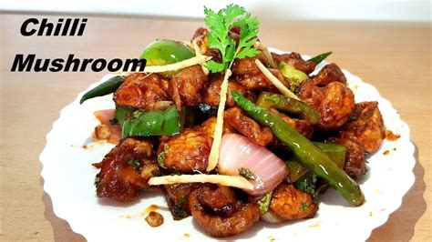

Chilly Mushroom

Description
Chilli Mushroom Dry or Mushroom Chilli recipe is an exemplary Indo-Chinese recipe and a perfect snack or appetizer for any get together. In this preparation, crispy mushroom nuggets are tossed in spicy sweet and sour sauce with spring onion, garlic, onion and capsicum chunks. It is immensely popular in India and one of the most served vegan starters in restaurants. It can be taken as an appetizer or as a side too with Fried Rice or Noodles.
Ingredients
- ½ cup maida / plain flour / all purpose flour
- ¼ cup corn flour
- ¼ tsp kashmiri red chilli powder / lal mirch powder
- ¼ tsp pepper (crushed)
- ¼ tsp ginger garlic paste
- ¼ tsp salt
- ½ cup water
- 8 mushroom (halves)
- oil for deep frying
- 3 tsp oil
- 2 clove garlic (finely chopped)
- 1 inch ginger (finely chopped)
- 2 green chilli (slit)
- 4 tbsp spring onion (chopped)
- ¼ onion (petals)
- ¼ capsicum (cubed)
- 2 tbsp tomato sauce
- 1 tsp chilli sauce
- 1 tbsp vinegar
- 1 tbsp soy sauce
- ¼ tsp pepper (crushed)
- ¼ tsp sugar
- ¼ tsp salt
- 1 tsp corn flour
- 2 tbsp water
Steps
- firstly, prepare the sauce by heating 3 tsp oil and saute 2 clove garlic, 1 inch ginger and 2 green chilli.
- Also, add 2 tbsp spring onion and saute on high flame.
- Furthermore, add ¼ onion and ¼ capsicum. saute slightly till the blisters appear.
- Now add 2 tbsp tomato sauce, 1 tsp chilli sauce, 1 tbsp vinegar, 1 tbsp soy sauce, ¼ tsp pepper, ¼ tsp sugar and ¼ tsp salt.
- Saute on high flame till the sauce thickens.
- Pour the corn flour water and stir continuously till the gravy thickens and turns glossy.
- Add in fried mushroom and mix gently coating sauce well.
- Finally, serve chilli mushroom recipe garnished with few chopped spring onions along with fried rice.
Credit: Description is copied from here and all the other content is copied from here.